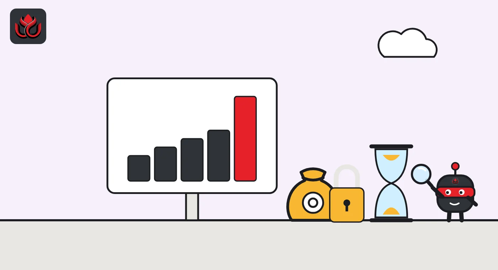

Ethena's fee switch got zero votes against. So why have ENA buybacks not started?
ENA holders approved revenue-funded buybacks without a single vote against, but buybacks only start once USDe supply reaches $7.5 billion. On November 2 it was about $4.5 billion.
Key points
- ENA holders passed Ethena's fee switch on September 2, 2026, with 17.8 million ENA for and none against.
- Buybacks only start when USDe supply reaches $7.5 billion. It was about $4.5 billion on November 2, so it needs to grow by roughly two-thirds.
- Ethena also bought out some early investors who had been selling, and no investor tokens are locked since October 5, 2026.
 What DeepSea's data shows
What DeepSea's data shows
Futures traders are betting on ENA. On November 2, DeepSea showed $23.08 million of ENA perpetual futures longs against $2.44 million of shorts among the traders it tracks. The live page does not name an exchange; DeepSea's weekly reports say its perps data covers open Hyperliquid positions held by the traders it tracks, so the figures are probably from the same source but from different dates.
Two weeks earlier the mood was weaker. DeepSea's weekly report for October 12 to 18 shows net long exposure to ENA among those traders fell by $28.36 million that week.
USDe was leaving Asian exchanges in the same week. DeepSea counts $29.95 million of USDe deposited and $44.50 million withdrawn, a net outflow of $14.55 million. ENA itself saw a small net inflow of $1.73 million ($11.74 million in, $10.01 million out).

Data: DeepSea (desea.io), checked November 1, 2026, 11:09 p.m. ET.
The vote
ENA holders approved a fee switch for Ethena on September 2, 2026, with 17,786,102 ENA in favor and none against, but no buybacks have happened yet. They only begin once USDe supply hits $7.5 billion, and supply was about $4.52 billion on November 2. The Ethena Foundation had published an ecosystem update and opened the vote on August 27. ENA is the governance token of Ethena, the protocol behind the USDe synthetic dollar. A fee switch sends part of a protocol's revenue to its token holders, here through buybacks of ENA on the market.
The update set out four changes: a buyout of locked tokens from some early investors, the release of all remaining investor tokens, an agreement in principle to give the Foundation the protocol's intellectual property and economic upside, and the fee switch itself.
The Snapshot vote ran from August 27 to September 2 at 9:59 a.m. ET. There were 88 votes, with none against and none abstaining. The minimum turnout, or quorum, was 5 million ENA.
ENA rose after the announcement. CoinGecko daily prices show about $0.148 at the start of August 27 and about $0.170 a day later, a gain of roughly 15%. It traded near $0.185 on November 2.
The catch: a $7.5 billion trigger
The vote did not switch buybacks on right away. Ethena's published schedule ties buybacks to USDe circulating supply. In the table in its update, the share of net revenue directed to buybacks is 5% at $7.5 billion of supply, rising to 10% at $10 billion, 15% at $15 billion, 20% at $20 billion and 25% at $25 billion or more.
Ethena's illustration assumes a 6% protocol yield. On that basis, it puts annual buybacks at about $22.5 million at $7.5 billion of supply, $60 million at $10 billion, $135 million at $15 billion and $240 million at $20 billion. Ethena stresses these are illustrative figures, not forecasts. The text also says that once the first milestone is hit, 95% of the net revenue paid to the Foundation from each Ethena business line would go to buybacks, with 5% kept to fund growth.
Ethena says the schedule is meant to support growth back to the 2025 high of about $15 billion of USDe supply. USDe is far from the first tier. CoinGecko data show its market value at about $4.22 billion when the vote closed, about $4.76 billion on October 12 and about $4.52 billion on November 2. A year earlier, on November 3, 2025, it was about $9.27 billion. To reach $7.5 billion from today's level, supply would need to grow by roughly two-thirds.
USDe supply versus the buyback trigger
US$ billion
Sources: CoinGecko daily market value for USDe; trigger from Ethena Foundation

Buying out the sellers
The same update dealt with early investors. The Foundation says it bought all locked tokens, in over-the-counter deals (private trades away from exchanges) over the previous two weeks, from investors originally allocated more than 0.25% of supply who had sold any ENA after the market peak of October 10, 2025. One wallet in that group declined to sell. Investors in the same size bracket who had not sold were offered a buyback at par, and none accepted, Ethena said.
Ethena published the related wallet addresses but did not disclose how many tokens it bought, at what price or how it paid.
All remaining investor unlocks were then accelerated so that, from October 5, 2026, no investor tokens are locked. Ethena says the roughly 12% of tokens still locked after the deal belong only to the team, ecosystem and Foundation, and team tokens stay on their original schedules. It also notes that StablecoinX holds about 20% of total supply under its own lockup.
Ethena Labs and the Foundation also agreed in principle on a Master Framework Agreement. Under it, the protocol's intellectual property and economic upside would go to the Foundation, not to equity holders of Ethena Labs. The update said the agreement was expected to be published in October 2026.
How Ethena is trying to grow USDe
USDe is not a dollar held in a bank account. It is backed by crypto and other assets paired with short futures positions, a strategy known as the basis trade, which earns funding payments from traders who borrow to bet on rising prices. That is why supply tends to shrink when crypto trading cools and funding falls.
Ethena has been adding new routes for demand. Its update said the protocol has three business lines: USDe savings, white-label stablecoins issued for other companies, and a new product it said would launch the following week. Ethena Pay, a payments and savings app that holds user balances in dollars, launched in about 50 countries in September, according to Aave.
On October 28, Aave announced Earn+, a higher-reward option inside Ethena Pay. Deposits go into a vault that supplies USDe and borrows USDT on Aave V4 on Avalanche. Withdrawals are paid back into the user's balance within 24 hours.
Timeline
Market peak used as the cutoff for the investor buyout
Ecosystem update published and Snapshot vote opened
Fee switch vote closes with no votes against
Remaining investor unlocks accelerated; no investor tokens remain locked
Earn+ launches inside Ethena Pay
USDe market value near $4.52 billion, per CoinGecko
LC Insight analysis
This section is our reading of the facts above, not a statement of fact.
- The vote was easy to win because it costs nothing today. A buyback that waits for two-thirds more supply is a promise, and its value depends on USDe demand coming back.
- The investor buyout is the real change. Taking sellers out before the final unlock reduced selling pressure, but without the price or size, holders cannot judge whether the Foundation paid fairly.
- We think the road to $7.5 billion runs through new distribution, like Ethena Pay and white-label stablecoins, not crypto yield alone. Watch USDe supply week by week: it is the simplest way to know whether buybacks will ever start.
What's next
- USDe circulating supply against the $7.5 billion trigger
- Publication of the Master Framework Agreement between Ethena Labs and the Foundation
- Any disclosure of the investor buyout size and price
Disclaimer. This article is based on public information and the sources listed below as of the update time shown. It is for information only and is not investment, legal or tax advice. Figures may change as companies and authorities publish new data.